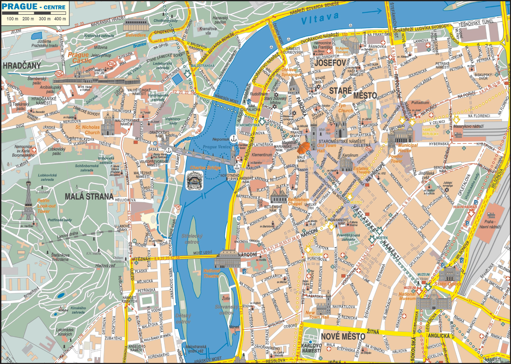
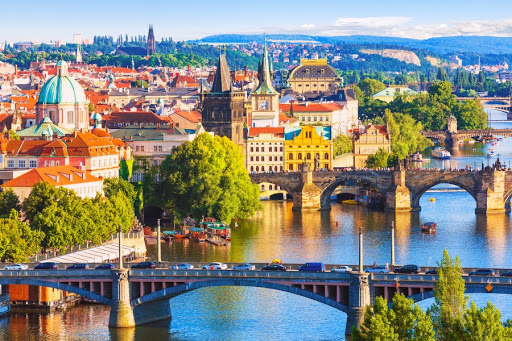

Местоположение

Прага (на чешки: Praha) е столицата и най-големият град на Чехия.
Населението на града през 2012 година е 1 241 273 души, което е над 10% от населението на Чешката република. Разположен е на река Вълтава. Прага е смятана за един от най-красивите градове в света и е сред най-посещаваните от туристи.
История
Прага е сред градовете с най-интересните истории в Европа и света. Още от средновековието средището по река Вълтава се превръща в най-значимия еврейски център на стария континент извън Пиренейския полуостров. Също така градът е признат за един от най-красивите в света и на два пъти е столица на Свещената Римска империя и седалище на императора ѝ. След края на Първата световна
война и разпада на Австрийската империя възниква Чехословакия. За столица е избрана Прага.
Този съюз се разпада под нацистки натиск през 1939 г. и по време на Втората световна война е създаден протекторат Бохемия и Моравия с център Прага.
Забележителности
Без значение накъде ще се насочите в Прага, ще откриете следи от богата история, като се започне от епохата на
Светата Римска империя, Хабсбургската империя, Първата република, комунистическата Чехословакия и се стигне до съвременната демократична Чешка република.
Ето и някои от най-прелестните атракции в Прага:
- Часовниковата кула Орлой – Построена е през 15 век и е реставрирана многократно през годините.
- Карловият мост – Мостът свързва “Старе место” с “Мала страна” през река Вълтава.
- Замъкът Храдчани – Това е най-големият дворец в Европа.
- Националният музей – Изключително богатата колекция на музея е разпределена в департаменти – по праистория, археология, етнография, нумизматика и театрален.
- Разходка с лодка по Вълтава. – Идеална възможност да се разгледат сградите откъм реката.
- Прашна брана – Кулата е висока 65 м. Била е един от входовете към стария град.
- Замъкът Карлщайн – Намира се само на 20-тина километра извън Прага и определено заслужава да се види.
- Танцуващата къща – Завършена е през 1996 г. Проектът е вдъхновен от танците на Джинджър Роджърс и Фред Астер.
- Зоологическата градина.– През 2007 г. е призната от списание Форбс за седмата най-добра в Света
